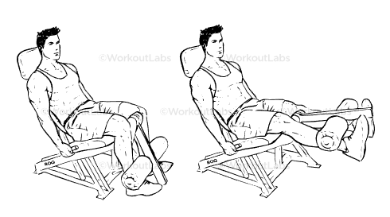
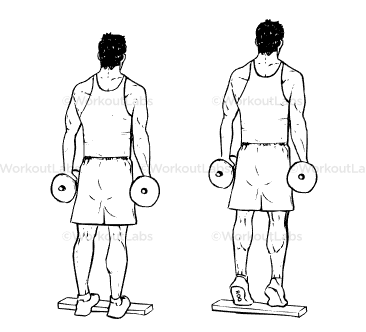
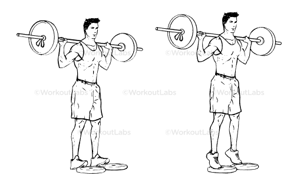
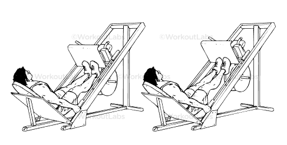

BACAK EGZERSİZLERİ
Seated Machine Leg Extensions
Ön bacak kaslarını izole şekilde çalıştırır. Doğru ağırlık ve yavaş kontrollü tekrarlar önemlidir.
Standing Dumbbell Calf Raises
Baldır kaslarını geliştirmek için etkili bir harekettir. Denge ve denetim gerektirir.
Standing Barbell Calf Raises
Barbell ile yapılan bu hareket, baldırlarda daha fazla direnç oluşturarak kas gelişimini artırır.
Leg Press Machine Calf Raises
Bacak pres makinesiyle yapılan bu varyasyon, baldırları daha izole çalıştırmak için uygundur.